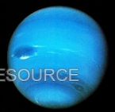

Neptune
Neptune is the farthest planet and known for strong winds.
| Distance from Sun | 4.5 billion km |
|---|---|
| Orbital Period | 165 years |
| Moons | 14 |
| Atmosphere | Hydrogen, Methane |
A Digital Encyclopedia of Our Solar System
Neptune is the farthest planet and known for strong winds.
| Distance from Sun | 4.5 billion km |
|---|---|
| Orbital Period | 165 years |
| Moons | 14 |
| Atmosphere | Hydrogen, Methane |